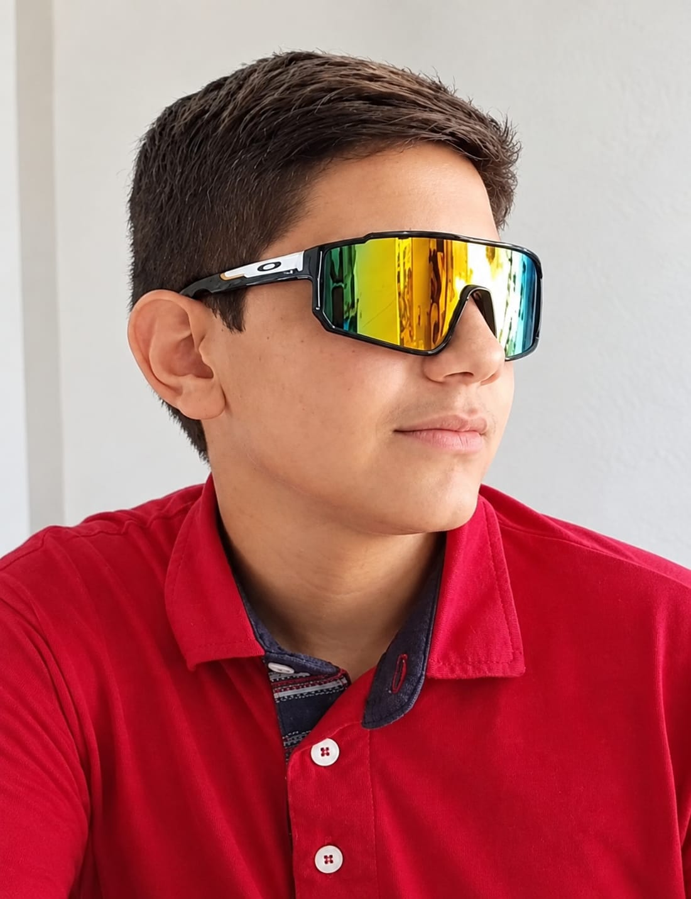

Sobre mim

Meu nome é Ramon Santiago Nogueira e sou estudante da EEEP Jeová Costa Lima, em Russas–CE.
Quando comecei minha formação, meu objetivo era seguir uma área relacionada ao agronegócio e à pecuária, pois sempre tive uma forte ligação com o campo, os animais e a vaquejada. Porém, durante a escolha do curso, acabei optando por Informática e descobri uma área que não imaginava que iria gostar tanto.
Ao longo do curso, tive a oportunidade de aprender HTML, CSS, PHP, Python e Portugol, desenvolvendo conhecimentos em programação, lógica e criação de projetos.
Hoje, gosto muito da área de Informática e pretendo continuar aprendendo e evoluindo. Ao mesmo tempo, nunca vou deixar de valorizar minhas raízes e o amor que tenho pelo interior, pela pecuária, pelos animais e pela vida no campo.
Este portfólio representa um pouco da minha trajetória, dos meus aprendizados e das duas áreas que fazem parte de quem eu sou: a tecnologia e minhas raízes no campo.